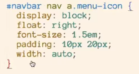

Mary Lark, Full Stack Engineer

Creating a Responsive Website
In this assignment, we were given a website that has been styled, but is not responsive, meaning if you adjust the height or width of the browser the contents may scale - but not well. For instance, columns may become as wide as the browser, rather than splitting up into easier-to-read smaller columns. Buttons may collapse one upon the next. Titles may become impossible to read as the browser window increases or decreases in size.
First we need to create a meta tag to use the viewport settings, set the content width to the device width, and then prevent scaling by setting initial, minimum and maximum scale to 1.0:
To keep things organized, let's put all of our responsive instructions in a new css file:
Make sure these directives are placed in all of our pages.
Next, return to your website. We're going to manually manipulate the size of the browser until something starts looking funky. At that point, we'll put in the responsive directives to fix the issue.
Before we get started, open the developer tools. In chrome, when we do this we'll see a ruler available under the browser address bar, and above our page.
As we start shrinking our browser window, we'll notice that some of our icons are getting squished into the image:
As we expand the browser, we'll see that it starts looking better around 1108 pixels:
So for our first media query we're going to write it for 1108px wide:
So what we've accomplished now is the browser is going to move the placement of the social icons when the browser collapses to 1108px or less, and the social icons will then be placed under the nav bar in absolute positioning (they will never move as you scroll the page, so they will scroll out of view); 82px from the top of the page, and 4% from the right of the page. Also the <a> tags will display inline-block.
Returning to the browser, let's see what else breaks as we scale down:
As you can see in the image above, around 900 pixels the navigation font is getting squished up against the edges, and the font size on the paragraphs below could get smaller in proportion to the smaller images. So we'll create another media tag at 900px.

The result here is now our navigation font and our text size has gotten a bit smaller as we approach 900px. But now the logo is looking a bit disproportionate:
However, we already have styles set for #logo h1 and #logo h2 - where h1 is the logo, and h2 is the "Exceptional Realty Group" text:
So we can just set the width and height of the logo down 10px; and set the font down to 2.2em:
Now as we scale down the logo, the area within that bar will scale down a bit, so we need to also reposition the social media icons:
So the social media icons were last set to 82px from the top, so we'll adjust them up a bit to72 px; from the top:

So now the social media icons are centered better within that bar area:
When we now reduce our screen size to around 800px, the nav bar links start getting smushed again:

So we'll set another media directive to 800px, to reduce the size of our nav bar links and anchors:
In looking at our paragraph columns, we're finding only 3-4 words per column. That looks squishy as well.
So let's look at the 3 columns. When we reduce the browser size to around 900 pixels, we end up with only 3-4 words per column.
The 3 columns uses a style of col-3:
So column rule is the vertical lines between the columns, and the column gap is the spacing between the columns. We want to set the column-count. Originally it is set to 3. So we'll go back to our media setting for 900px and add a setting for .col-3 to move down to 2 columns::

So now this looks much better :
And for the column on the right-hand side of the photo :
So as shown above, we'll set the columns down to 100% for all 3 formats of columns under 750 px., with no left margins, and no float.
Now you can see when you get down below 750px. browser width the column jumps down under the photo, rather than next to it:
At 750 px we have a border problem at the bottom of the page:

So add another media directive to remove the border:
And looking again at the screenshot above, the contact details, we want to fix the way it is laying out:
And you can see it has now been adjusted properly:
So now at 750px, the columns are starting to get pretty narrow again:
So we should go ahead and set all the columns down to 1 in the media directive for 750px:
And here our columns now collapse into 1 when the browser window is reduced less than 750px:
Next, when we scale down under 750, the nav bar gets completely squished:

So we want to collapse the nav bar into a hamburger bar icon.
Notice on getbootstrap.com, the navigation menu looks like:
but as we scale down, the navigation bar collapses into a hamburger bar icon:
On our original style for the nav bar, we included a special<a> tag with class menu-icon for the hamburger bar icon, and the code for the hamburger bar icon : ☰
And a style was created for the menu-icon class so that the hamburger icon would not display by default:
So first we want to hide all of the navigation bars when we reduce our screen to 700px:
And now we want to activate the hamburger bar icon:
So now when we scale down below 700px we need to remove some padding around the logo and the social media icons:
And when we get down below 495 px our logo and social media are getting smushed again:
So let's add another media query for 495px:
And now you can get very small and you still have your navigation hamburger, your logo, and your social media icons:
Remember to check the behavior on all of your pages before completing this exercise.
To see the website in action:
Contact
email: mary@marylark.com
phone: +1 925 866 1111
Correspondence
1002 E. Winding Creek Dr.Eagle, ID 83616
© 2018 Mary Lark. All Rights Reserved.